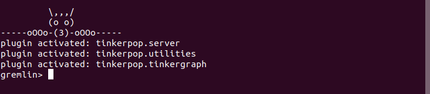
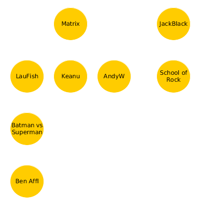

Apache TinkerPop
Introducción a ThinkerPop y al lenguaje Gremlin
Una suit de productos para trabajar con Bases de Datos de Grafos.
¿Que productos contiene?
| Gremlin Console |
| Gremlin Server |
| Tinker Graph |
| Java API |
Vamos a aprender el lenguaje de consulta de BDs de grafos llamado Gremlin. Y para eso vamos a utilizar la Gremlin Console.
Descargar de: http://tinkerpop.apache.org/
Ejecutar desde una consola:
> cd gremlin-console
> bin/gremlin.sh

Supongamos que tenemos el siguiente grafo (películas), con vértices "persona" y "película" y la propiedad "nombre".
Inicialización
gremlin> peliculas = TinkerGraph.open()
gremlin> peliculas.toString()
==>tinkergraph[vertices:0 edges:0]Creamos el Grafo "Películas"
peliculas = TinkerGraph.open()
g = peliculas.traversal()
keanu = g.addV("persona").property(T.id, 1).property("nombre", "Keanu").next()
andy = g.addV("persona").property(T.id, 2).property("nombre", "A. Wach...").next()
jack = g.addV("persona").property(T.id, 3).property("nombre", "Jack Black").next()
lau = g.addV("persona").property(T.id, 9).property("nombre", "L. Fishburn").next()
ben = g.addV("persona").property(T.id, 12).property("nombre", "Ben Affleck").next()
matrix = g.addV("pelicula").property(T.id, 4).property("nombre", "The Matrix").next()
batvsSup = g.addV("pelicula").property(T.id, 11).property("nombre", "Batman vs Superman").next()
school = g.addV("pelicula").property(T.id, 5).property("nombre", "School Of Rock").next()
g.addE("actuo").from(lau).to(batvsSup).property(T.id, 13).property("role", "periodista")
g.addE("actuo").from(ben).to(batvsSup).property(T.id, 14).property("role", "batman")
g.addE("actuo").from(keanu).to(matrix).property(T.id, 6).property("role", "neo")
g.addE("actuo").from(lau).to(matrix).property(T.id, 10).property("role", "morpheous")
g.addE("dirigio").from(andy).to(matrix).property(T.id, 7)
g.addE("actuo").from(jack).to(school).property(T.id, 8).property("role", "Dewey")
Creamos el Grafo "Películas"
Guardemos el script anterior como "pelis.grm", y luego desde la consola gremlin:
gremlin>:load pelis.grmNos quedará el grafo cargado en memoria listo para usar.
Graph Traversal
Una query/consulta sobre una base de datos de grafos generalmente se denomina "traversal" (recorrer), dado que de hecho es lo que hacemos.
gremlin>pelis = TinkerGraph.open()
gremlin>g = pelis.traversal()
Esto nos deja la variable "g" lista para empezar a recorrer el grafo.
Queries sobre Vértices: Algunos Ejemplos
//recupero todos los vértices
gremlin>g.V()
//recupero el vértice con ID 1
gremlin>g.V(1)
//recupero los vértices con label "persona"
gremlin>g.V().hasLabel('persona')
//recupero los vértices con propiedad nombre = "Keanu"
gremlin>g.V().has('nombre','Keanu')
//recupero los vértices "persona" con propiedad nombre = "Keanu"
gremlin>g.V().hasLabel('persona').has('nombre','Keanu')
//recupero todos los valores de las propiedades de los vértices 'película'
gremlin>g.V().hasLabel('pelicula').values()
//recupero los vértices que no tienen la propiedad "nombre"
gremlin>g.V().hasNot('nombre')
//cantidad de vértices
gremlin>g.V().count()
//cantidad de películas
gremlin>g.V().hasLabel('pelicula').count()
Queries sobre Relaciones. Muy similar que sobre los vértices
//recupero todas las relaciones
gremlin>g.E()
//recupero la relación con ID 5
gremlin>g.E(5)
//todas las relaciones con label "actuo"
g.E().hasLabel("actuo")
//todas las relaciones con la propiedad role = "batman"
g.E().has("role","batman")
Traversal: Recorriendo el grafo
//Parto de una o varias relaciones
gremlin>g.E().has("role","batman")
==>e[14][12-actuo->11]
//Quiero las propiedades del nodo del cual parte la relación
gremlin>g.E().has("role","batman").outV().values()
==>Ben Affleck
//Quiero las propiedades del nodo al cual llega la relación
gremlin>g.E().has("role","batman").inV().values()
==>Batman vs Superman
Traversal: Recorriendo el grafo
//Parto de uno o varios vértices
gremlin>g.V().has('nombre', eq('Keanu'))
==>v[1]
//Quiero las propiedades de las relaciones que salen del nodo
gremlin>g.V().has('nombre', eq('Keanu')).outE().values()
==>neo
//Quiero las propiedades de las relaciones que entran al nodo
gremlin>g.V().has('nombre', eq('Keanu')).inE().values()
==>(empty)
//Quiero las propiedades de los nodos a los que llego desde este nodo
gremlin>g.V().has('nombre', eq('Keanu')).out().values()
==>The Matrix
//Todas las pelis donde actuó Keanu?
gremlin>g.V().has('nombre', eq('Keanu')).out('actuo').values()
==>The Matrix
Traversal: Recorriendo el grafo
//Quienes dirigieron las películas donde actuó Keanu?
gremlin>g.V().has('nombre', eq('Keanu')).out('actuo').in('dirigio').values()
==>Andy Wachowisky
//Quienes actuaron en las películas donde actuó Keanu?
gremlin>g.V().has('nombre', eq('Keanu')).out('actuo').in('actuo').values()
==>Laurence Fishburn
//Quienes actuaron en las películas donde actuaron los que actuaron con Keanu?
gremlin>g.V().has('nombre', eq('Keanu')).repeat(out('actuo').in('actuo')).times(2).values()
==>Ben Affleck
Traversal: Caminos Recorridos (path)
//Caminos recorridos para la query de quienes actuaron donde actuó Keanu?
g.V().has('nombre', eq('Keanu')).out('actuo').in('actuo').path()
==>[v[1],v[4],v[1]]
==>[v[1],v[4],v[9]]
//En lugar de IDs de los vértices usemos una propiedad
g.V().has('nombre', eq('Keanu')).out('actuo').in('actuo').path().by('nombre')
==>[Keanu,The Matrix,Keanu]
==>[Keanu,The Matrix,Laurence Fishburn]
//¿Observan el ciclo en el grafo resultado del primer camino devuelto?
g.V().has('nombre', eq('Keanu')).out('actuo').in('actuo')
.not(cyclicPath())
.path().by('nombre')
==>[Keanu,The Matrix,Laurence Fishburn]